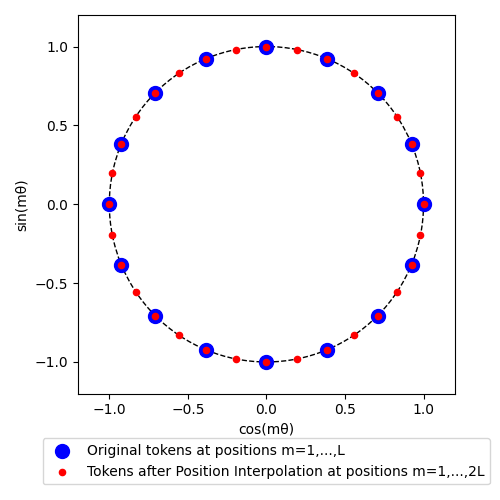
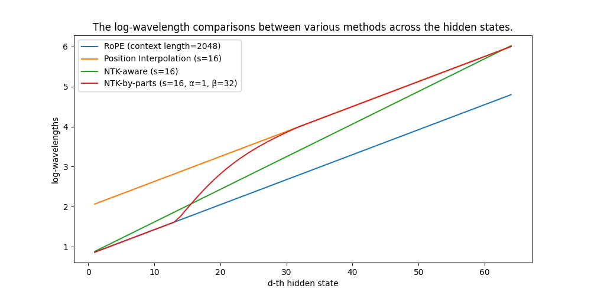
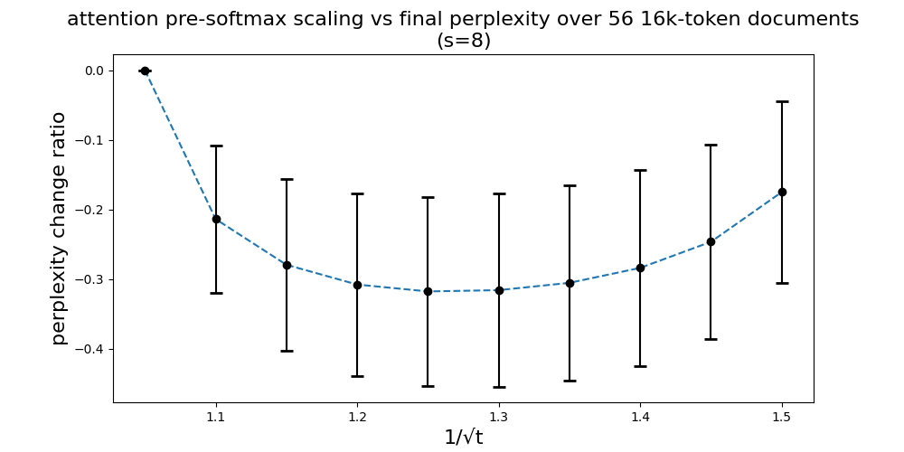
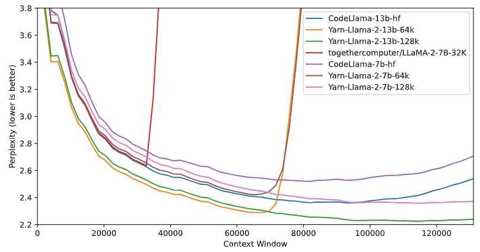
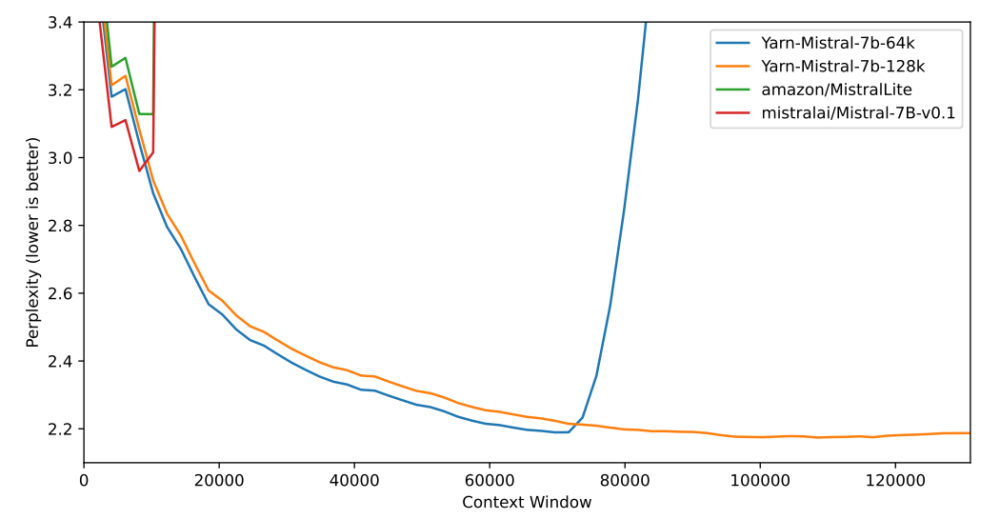

Rotary Position Embedding (RoPE) is an effective position-encoding technique first introduced in Su et al. (2020) [1] and later popularized in open-source models such as GPT-J, GPT-NeoX, PaLM, LLaMA, etc. We covered the mathematics and the implementation details of RoPE in this blog post about 2 years ago. Although the RoPE is limited by its pretrained context size, we will summarize a line of research that manages to extend the context length of the RoPE so that a pretrained language model can be easily adapted to fit the increasingly challenging tasks being given to LLMs.
Conventions
Given a sequence of tokens $w_1, w_2, \cdots, w_L$ of length $L$, the token embedding maps them to $x_1, x_2, \cdots, x_L\in \mathbb R^{|D|}$, where $|D|$ is the dimension of the hidden states. At token position $m$, the attention mechanism first produces the query and key vectors through functions $f_q$ and $f_k$ as follows: $$ q_m = f_q(x_m, m) \in \mathbb R^{|L|}, k_m = f_k(x_m, m) \in \mathbb R^{|L|}. $$ Given a pair of token positions $m, n$, the attention scores are given by $$ \text{softmax}(\dfrac{q_m^Tk_n}{\sqrt{|D|}}), $$ where $q_m, k_n$ are column vectors. The heuristic is that given the pair $m, n$, the attention score indicates how much "attention" should be assigned to the $n$-th token, given the $m$-th token.
Rotary Position Embedding
The idea of the Rotary Position Embedding (RoPE) is very simple: the attention scores should only depend on the relative distance $m - n$ between the two tokens. In mathematical forms, we want the functions $f_q, f_k$ to satisfy $$ f_q(x_m, m)^Tf_k(x_n, n) = g(x_m, x_n, m - n), $$ where $g$ is a function only depending on the embedding vectors and the relative distance $m - n$. Our previous blog explained the details of the deduction, and the conclusion is that $f_q, f_k$ can be constructed in a uniform way as follows:
\begin{align} f_W(x_m, m, \theta_d) = \begin{pmatrix} \text{cos} m\theta_1 & - \text{sin} m\theta_1 & 0 & 0 & \cdots & 0 & 0 \\ \text{sin} m\theta_1 & \text{cos} m\theta_1 & 0 & 0 & \cdots & 0 & 0 \\ 0 & 0 & \text{cos} m\theta_2 & - \text{sin} m\theta_2 & \cdots & 0 & 0 \\ 0 & 0 & \text{sin} m\theta_2 & \text{cos} m\theta_2 & \cdots & 0 & 0 \\ 0 & 0 & 0 & 0 & \cdots & \text{cos} m\theta_l & - \text{sin} m\theta_l \\ 0 & 0 & 0 & 0 & \cdots & \text{sin} m\theta_l & \text{cos} m\theta_l \\ \end{pmatrix} W_q\textbf{x}_m.\\ f_q = f_{W_q}, ~f_k = f_{W_k}, \end{align} where $\theta_d = b^{-2d/|D|}$, is the angle at the $d$-th hidden state with $b$ chosen to be $10000$ in the RoFormer paper ([1]).
A few methods we introduce below will enhance RoPE by the following format: we modify the function $f$ into $f'$ according to the equation $$ f'_W(x_m, m, \theta_d) = f_W(x_m, g(m), h( \theta_d)) $$ for functions $g, h$ depending on the method being discussed. When such a modification is presented in the following sections, we will simply specify the functions $g$ and $h$ for simplicity.
Position Interpolation
During the pretraining, the data is cut into chunks of sequences of equal amounts of tokens $L$. Once the pretraining is done, it is hard to perform inference on sequences longer than $L$, but instead of completely retraining on longer chunks with $L'$ tokens ($L' > L$), kaiokendev [2] and Chen et al. [3] found that it would be more efficient to take advantage of the relative nature of RoPE and finetune the original model with the following change to the RoPE formula (according to the notation introduced earlier): $$ g(m) = m/s, \quad h(\theta_d) = \theta_d, $$ where the scaling factor $s=L’/L$. The method is called Position Interpolation (PI). The name is very self-explanatory, and the effect on the coefficients in a given (complex-valued) hidden dimension can be visualized in the following toy case ($s=2$).

We simply "squeeze" the new sequence inside the original context window, and it takes orders of magnitude less finetuning to let the model get used to the new position embedding. PI still has several limits: - It normally requires finetuning on about $1-10$ billion tokens. - After finetuning on longer sequences, the perplexity slightly increases for short sequences compared with the original pretrained model. - The way it modifies the RoPE formula did not take advantage of applying better frequencies via $h(\theta_d)$.
"NTK-aware" Interpolation
Looking at RoPE only from an information-encoding perspective, it was shown in [4] using Neural Tangent Kernel (NTK) theory that deep neural networks have trouble learning high-frequency information if the input dimension is low without the corresponding embeddings having high-frequency components. In our case, the one-dimensional input—the token positions—is expanded by RoPE into an n-dimensional, complex vector embedding. The scaling by PI reduces the frequencies $\theta_d$ uniformly, which may prevent the model from learning high-frequency features.
To take advantage of the observation, the "NTK-aware" interpolation was proposed in public as a reddit post. The modification is as follows: instead of scaling the frequencies of every dimension of RoPE by a factor of $1/s$, we spread out the interpolation pressure across multiple dimensions by scaling high frequencies less and low frequencies more.
More precisely, recall that $s = L'/L$ is the ratio between the longer sequence length and the original sequence length and that $\theta_d = b^{-2d/|D|}$. We perform a base change to the angles adjusted by the scale factor $s$ as follows: $$ b' = b \cdot s^{\frac{|D|}{|D| - 2}}. $$ Under the previous convention, the "NTK-aware" interpolation is given by $$ g(m) = m, ~ h(\theta_d) = b'^{-2d/|D|}. $$
Digression: Wavelength
A commonly overlooked aspect in rotary embedding is the relationship between the “wavelengths” and the sequence length. Let us start by putting down the definition of wavelength in our context.
Recall that in the definition of RoPE), each hidden state of the query and key vectors is multiplied by trigonometric functions. For a fixed $d$-th hidden state, the coefficients $\text{cos} m\theta_d, \text{sin} m\theta_d$ (as functions of $m$) are periodic with the same frequency. The wavelength at the $d$-th hidden state is calculated as follows: $$ \lambda_d = 2\pi b’^{\frac{2d}{|D|}}. $$ It describes the amount of tokens needed in order for the RoPE embedding at dimension $d$ to perform a full rotation ($2\pi$). Across the hidden dimensions, the RoPE orders the wavelengths from small to large. When applying PI, the wavelength is linearly scaled by $s = L'/L$.
Wavelength is a notion comparable with the context lengths $L$ and $L’$. From this perspective, we can see that when the wavelength $\lambda_d < L$, the whole period window is fully utilized by all token positions, whereas when $\lambda_d > L$, the token positions up to $L$ only occupy a portion of the whole period window.
"NTK-by-parts" Interpolation
The performance comparison between PI and “NTK-aware” interpolation is mixed: - When directly modifying the RoPE formula without finetuning, "NTK-aware" interpolation shows better (lower) perplexity than PI on longer sequences. - The "NTK-aware" interpolation performs worse than PI after finetuning on longer context data.
A fix addressing this issue of “NTK-aware” was first posted in public as a GitHub pull request.
We hypothesize that the high frequency has a detrimental effect on the model's ability to understand small and local relationships between embeddings. To smooth out the effect between the original frequency and the interpolated frequency, we compare the wavelength with the original context length $L$ and construct a piecewise linear function $$ h(\theta_d) = (1 - \gamma)\dfrac{\theta_d}{s} + \gamma\theta_d, $$ where $\gamma$ is the ramp function $$ \gamma(r) = \begin{cases} 0, &\text{if } r < \alpha\\ 1, &\text{if } r > \beta\\ \dfrac{r - \alpha}{\beta - \alpha}, &\text{otherwise} \end{cases} $$ depending on two extra parameters $\alpha$ and $\beta$. The $\alpha, \beta$ is tuned on a case-by-case basis, and we found that $\alpha=1, \beta=32$ is ideal for Llama family models. Along with $g(m) = m$, we call this interpolation method the "NTK-by-parts" interpolation.
The following chart compares the wavelengths between the RoPE, PI and "NTK-by-parts" in the case where the pretrained context length is 2048 and we use a scale factor of 16.

We can summarize it as follows: taking NTK theory into account, we interpolate the wavelengths from RoPE to PI over different hidden dimensions as $d$ increases. “NTK-aware” refers to the naive linear interpolation (in green), whereas “NTK-by-parts” uses a ramp function in the middle (in red).
YaRN
In all the interpolation methods, we also observe that by putting a suitable temperature after the attention softmax, we can improve the perplexity over the extended context window.
More precisely, we slightly adjust the attention formula from $$ \text{softmax}(\dfrac{q_m^Tk_n}{\sqrt{|D|}}) $$ to $$ \text{softmax}(\dfrac{q_m^Tk_n}{t\sqrt{|D|}}) $$ by introducing an extra temperature $t$ in the attention logits before the softmax. To burn this temperature adjustment into the position embedding, we simply scale the vectors $q = (q_m)$ and $k = (k_n)$ by $\sqrt{\dfrac{1]{t}}$, which can be further simplified by scaling the frequencies in the implementations.
Here we conducted a small experiment between different values of $\dfrac{1}{\sqrt{t}}$ and the perplexity change $\dfrac{\text{ppl}(t) - \text{ppl}(t=1)}{\text{ppl}(t=1)}$ over $56$ $16$k-token documents. The results support our claim that a temperature “sweet spot” should exist.

When determining the best $t$ for Llama 2 7B, we found that the following equation works well for $t$ regardless of model size and data: $$ \sqrt{\frac{1}{t}} = 0.1 \ln({s}) + 1. $$ The same $t$ even works well for other sizes of Llama 2 models (13B and 70B) as well as all the original LLaMA models.
Overall, our YaRN method refers to a combination of this temperature-scaling technique and the “NTK-by-parts” interpolation.
Some notes on how you can use YaRN for your own model
The YaRN parameters for Llama 2 may not work out-of-box for different model classes. YaRN is a combination of NTK-by-parts and temperature scaling on attention weights. Throughout the implementation of YaRN, there are a few parameters one can tune: $\alpha$: deciding the starting point of the ramp function, $\beta$: deciding the end point of the ramp function, $t$: the temperature scale, $L’$: the new maximal context length (which is not necessarily the length of your longest sample). It is recommended to start with a comfortable $L’$ given your long-context dataset and try a few smaller finetuning runs to determine the $\alpha$, $\beta$ and $t$. Our experience is that $t$ does roughly follow the parametric form of $$ \sqrt{\frac{1}{t}} = a \ln({s}) + b $$ for certain $a$ and $b$, which are not too far from our Llama parameters for another large language model pretrained on web data. An example would be the YaRN finetuned 128k context Mistral-7B, where we determined $a = 0.07, b=1.0$.
Dynamic Scaling
In a lot of use cases, the sequence lengths vary constantly from $1$ to the maximal context size. A typical example is autoregressive generation, where the sequence lengths increment by $1$ after each step. One way to apply an interpolation method mentioned earlier is to fix the scale factor $s=L’/L$ in the position embedding throughout the process, no matter whether we are running a forward pass on a sequence with $L$ tokens, $L’$ tokens or $L’ + 1$ tokens. A common problem is that the model may experience a flat reduction of performance at lengths less than $L$ or an abrupt degradation on longer sequences starting at $L’ + 1$ tokens.
A solution to this problem was first proposed in a reddit post, which suggests dynamically adjusting the scale factor $s$ according to the current sequence length $l’$ as follows: $$ \begin{align} s &= \begin{cases} \frac{l'}{L}, & \text{if } \frac{l'}{L} > 1\\ 1, & \text{otherwise}. \end{cases} \end{align} $$ We call this inference-time technique the Dynamic Scaling technique. It applies to all of PI, NTK-by-parts and YaRN, and we call them dynamic PI, dynamic “NTK” and dynamic YaRN, respectively.
We would like to note that the "dynamic NTK" interpolation works exceptionally well on models pretrained on $L$ without any finetuning ($L’=L$).
Experiments and final words
One of the experiments we ran was to compare PI, NTK-aware and YaRN over a sliding window of $256$ tokens across a long context window. For Llama models and their finetunes, we have the following chart.

For the finetunes of Mistral-7b, we have the following chart.

We direct interested readers to our arXiv preprint for more details and experiment results.
We would also like to point out that there are other recent works on context length extension, such as Rectified Rotary Position Embeddings (ReRoPE) and Positional Skip-wisE (PoSE) training, though they are different lines of work and are out-of-scope for this blog post.
Citation Information
@misc{peng2023yarn,
title={YaRN: Efficient Context Window Extension of Large Language Models},
author={Bowen Peng and Jeffrey Quesnelle and Honglu Fan and Enrico Shippole},
year={2023},
eprint={2309.00071},
archivePrefix={arXiv},
primaryClass={cs.CL}
}
References
[1] J. Su, Y. Lu, S. Pan, A. Murtadha, B. Wen, and Y. Liu. RoFormer: Enhanced transformer with rotary position embedding, 2022. arXiv: 2104.09864.
[2] kaiokendev. Things I’m learning while training superhot., 2023. URL https://kaiokendev. github.io/til#extending-context-to-8k
[3] S. Chen, S. Wong, L. Chen, and Y. Tian. Extending context window of large language models via positional interpolation, 2023. arXiv: 2306.15595.
[4] M. Tancik, P. P. Srinivasan, B. Mildenhall, S. Fridovich-Keil, N. Raghavan, U. Singhal, R. Ra-mamoorthi, J. T. Barron, and R. Ng. Fourier features let networks learn high frequency functions in low dimensional domains. In Proceedings of the 34th International Conference on Neural Information Processing Systems, NIPS’20, Red Hook, NY, USA, 2020. Curran Associates Inc. ISBN 9781713829546.